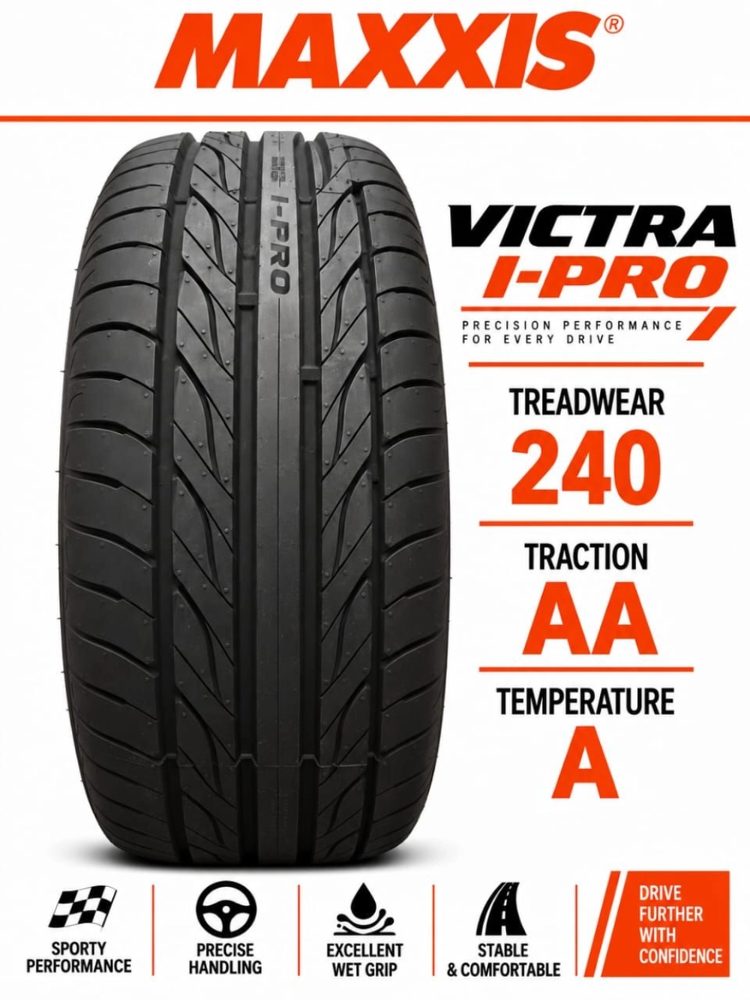

Maxxis Victra Ipro 195/55R15

RM 178.00
The Maxxis Victra I-Pro is an Ultra-High Performance (UHP) tyre designed for sporty driving, responsive handling and excellent high-speed stability. Its directional tread pattern with large shoulder blocks enhances grip during cornering, while a reinforced centre rib improves steering precision. Four wide drainage grooves effectively disperse water to reduce aquaplaning risk. Key Features: • Excellent wet and dry grip • Precise steering response • Enhanced cornering stability • Excellent high-speed handling • Improved aquaplaning resistance • Reduced road noise • Reinforced sidewall construction Specifications: • Size: 195/55R15 • Load & Speed Rating: 85V • Maximum Load: 515 kg • Maximum Speed: 240 km/h • Tyre Category: Ultra-High Performance (UHP) • Tread Pattern: Directional • Treadwear: 240 • Traction: AA • Temperature: A • Brand Origin: Taiwan • Made in Thailand
Klang Hock Li Tyre Services Sdn Bhd, Klang, Selangor, Malaysia.
View live product details and enquire